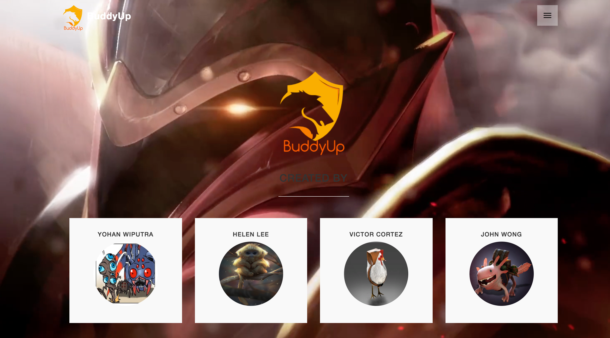
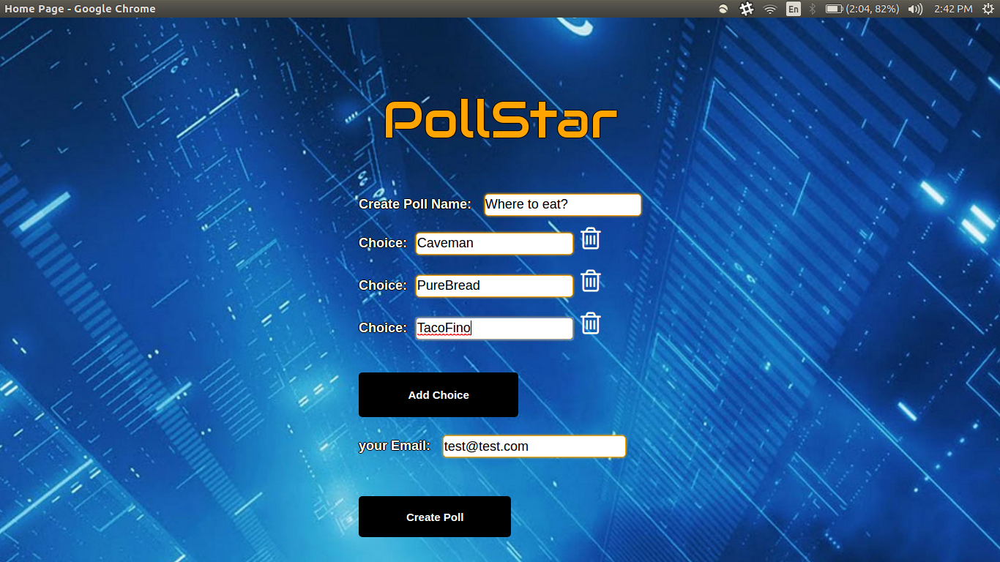
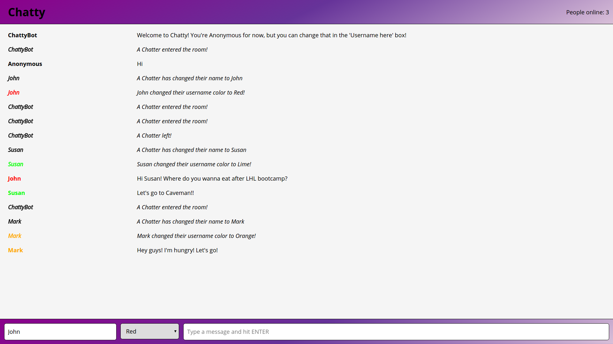
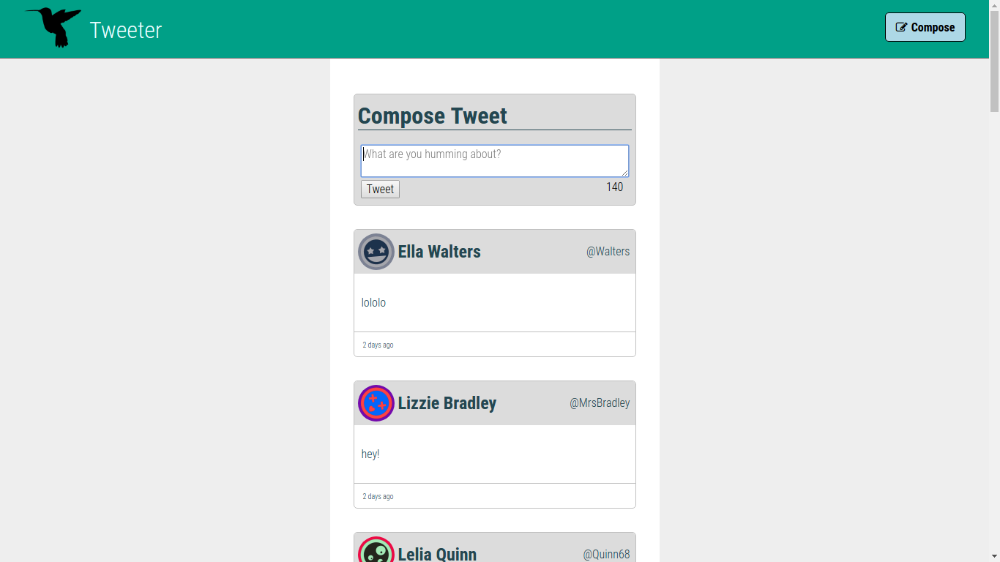

Summary
Kwantlen Polytechnic University sociology graduate with quantitative & qualitative research experience and now solves problems through code. Currently focused on developing full-stack coding skills focusing on PHP, NoSQL, ES6, & JQuery. Hungry learner, hard worker, & team player. Cheese & sushi enthusiast but not at the same time.
Experience
- Web Development - Full-Stack
- Quantitative & Qualitative Research
- Event Planning
- Customer Service
- Teaching & Mentoring
Education
- Web Development Diploma - Lighthouse Labs
Graduated in August 2017Received a Diploma in Web Development after completing an intensive full-stack Web Development bootcamp with over 500 hours of on-hand and theoretical programming classes. The bootcamp included JavaScript, Ruby, Rails, React, PostgresSQL and more.
-
Projects  Lighthouse Labs Final Project - A game match-making web application built on React, Redux, PostgreSQL, Express, Socket.io and Node.js. Meant as a better automatch-making system than an online game's default matching system, this web app uses a Tinder-style approach in pairing up players based on their desired skill-level of their match.
 Lighthouse Labs Midterm Project -
 Slack Clone
 Twitter Clone
- Study Abroad - University of Central Lancashire
January 2016 to May 2016Took part in the KPU Study Abroad Program (Exchange Semester Spring 2016) in Preston, Lancashire, United Kingdom. Awarded Irving K. Barber One World International Scholarship to go towards the expenses of the Exchange Semester.
- Bachelor of Arts in Sociology - Kwantlen Polytechnic University
Graduated in October 2017Awarded a Bachelor of Arts in Sociology and received the President's Most Outstanding Graduate Award for Academic Excellence and Community Involvement.
Employment
- Active KSA - Active KSA Specialist
2012 to 2017Created, and facilitated health and recreational programs for the Kwantlen Student Association and Kwantlen Polytechnic University community. Responsibilities involved event planning, event facilitation, public speaking, connecting with executives, communicating with companies and university staff for school events.
- Storied Migrants - Research Assistant
May to Nov 2015Assisted PhD Candidate, Jenny Shaw, on her PhD project titled Storied Migrants: Transnational Youths’ Experiences of Place and Belonging after Long-Term Family Separation which included setting up, leading, and making reports for workshops as well as transcribing.
- Explore Program: Langara College - Cultural Assistant
June to July 2015Researching, organizing & implementing cultural/recreational activities and events; preparing reports & program evaluations; meeting with the Program Coordinator & other CAs on a daily basis; preparing for and participating in a weekly forum for students; & handling activity-related budgeting duties as required.